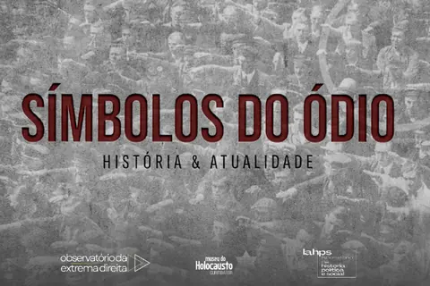

NETEX · Publicações
Publicações
Guias de referência, verbetes, boletins do Observatório e relatórios técnicos produzidos no núcleo ou em parceria com as redes de que ele participa.
Símbolos do Ódio: história e atualidade

Material educativo produzido em parceria entre o Observatório da Extrema Direita, o Museu do Holocausto de Curitiba e o Laboratório de História Política e Social da UFJF. Reúne mais de cem símbolos, siglas, numerologias, gestos e memes empregados por grupos extremistas, cada um apresentado com sua origem histórica, seus usos contemporâneos e o contexto em que circula no Brasil.
O guia nasceu de uma demanda concreta: docentes da educação básica, gestores escolares e agentes públicos frequentemente se deparam com essas marcas em muros, cadernos, redes sociais e vestuário, sem repertório para identificá-las nem para distinguir o que é apropriação irônica do que sinaliza filiação efetiva. Identificar não é o mesmo que interpretar, e o material foi escrito para sustentar essa diferença.
A elaboração contou com participação discente e integra a linha de trabalho do núcleo sobre violência política e discurso de ódio.
O download é disponibilizado pelo Museu do Holocausto de Curitiba, mediante preenchimento de formulário. O guia integra o acervo de materiais educativos da instituição.
Em preparo
Publicações previstas, com prazo declarado.
Guia de referência sobre extremismo violento em ambientes escolares
Primeira meta do projeto FAPEMIG APQ-02854-26, sob responsabilidade do NETEX. Previsto para o primeiro semestre de 2027.
Fascismo em Perspectiva — livro coletivo
Produto do Ciclo I do GETEX, com um capítulo por módulo e subseções escritas a quatro mãos pelos participantes. Manuscrito completo previsto para meados de 2028.
Boletins do Observatório
Radar quinzenal, análises mensais e relatórios semestrais. Primeiro número previsto para 2027.